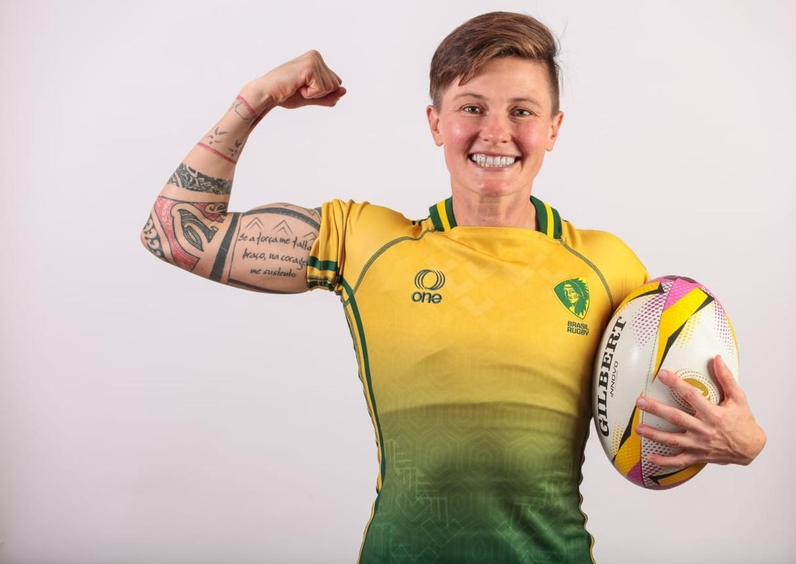
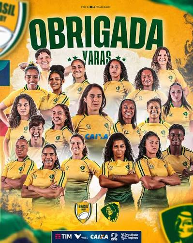
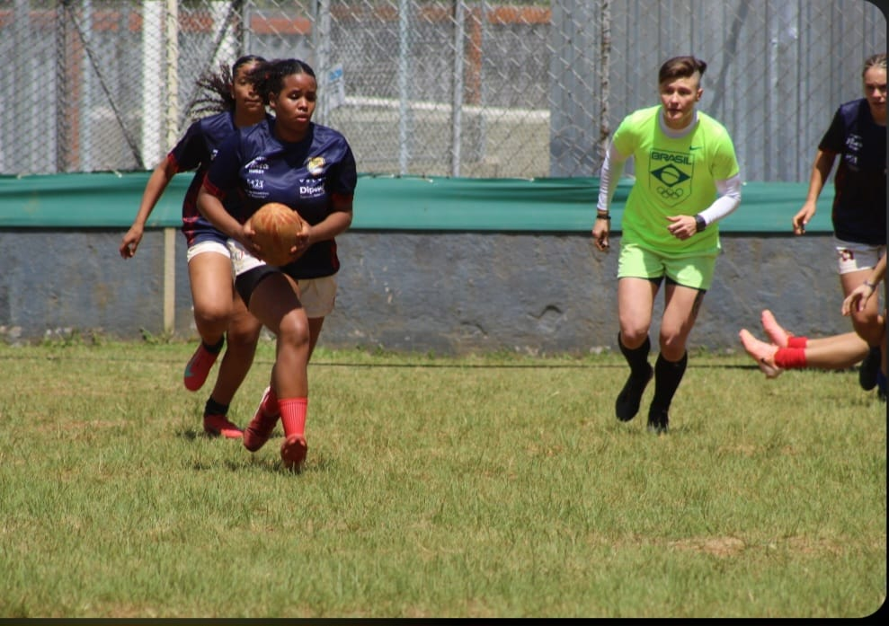
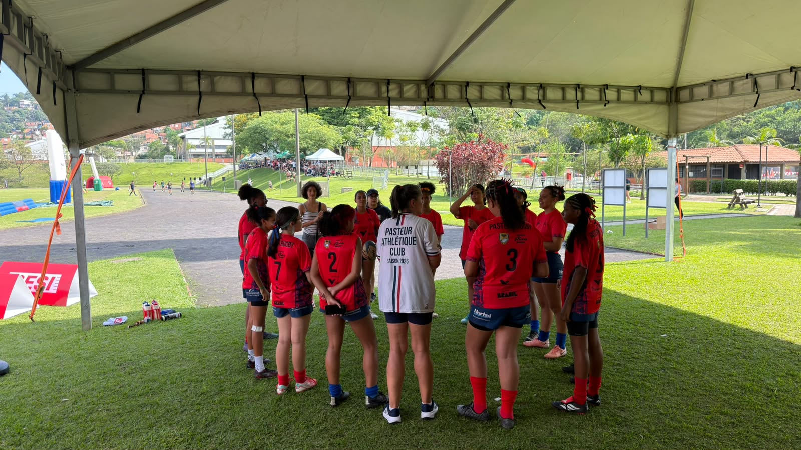
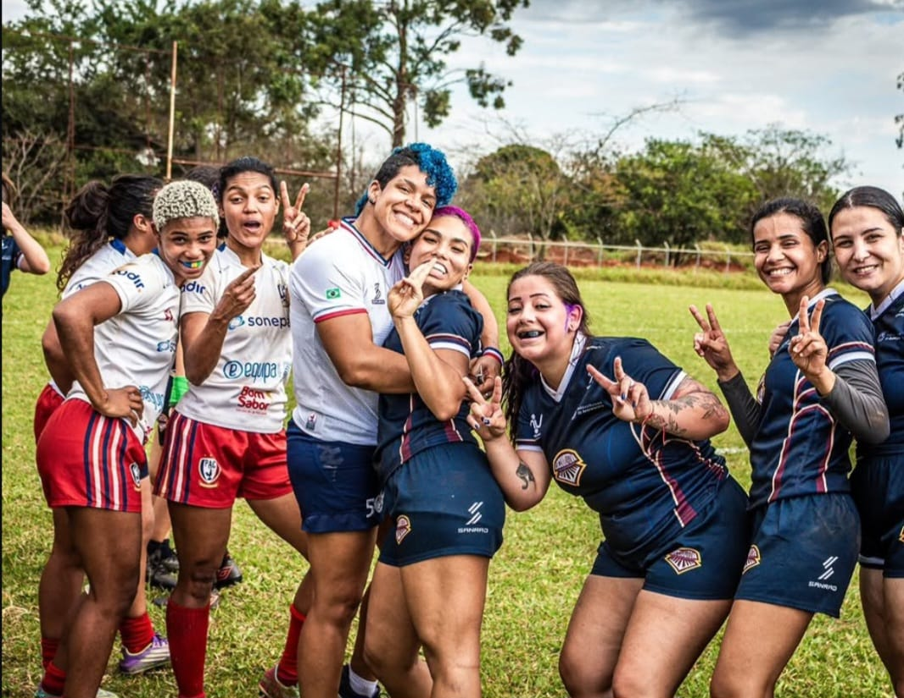
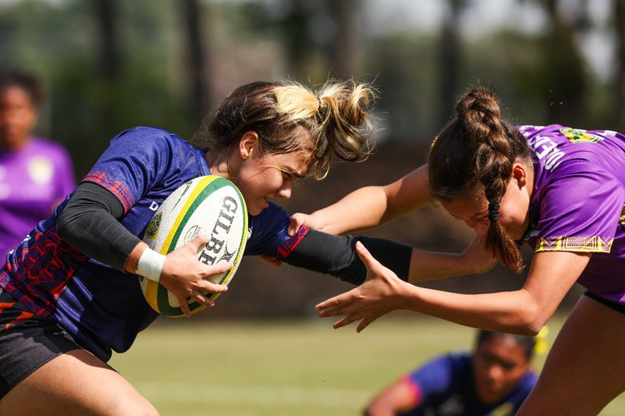
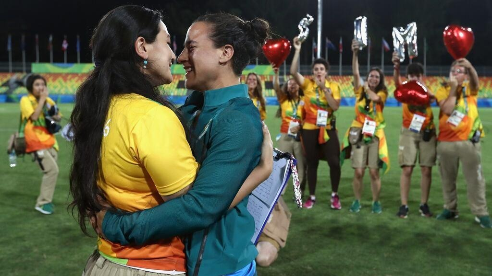

Raquel Kochhann

Porta-bandeira olímpica, líder das Yaras e símbolo de resistência.
Natural de Saudades (SC), Raquel descobriu o rúgbi aos 19 anos e construiu uma das trajetórias mais vitoriosas do esporte nacional. Integrante da Seleção Brasileira (As Yaras), representou o país nos Jogos Olímpicos do Rio 2016, Tóquio 2020 e Paris 2024.
Após superar a batalha contra um câncer raro, ela viveu o auge da representatividade ao ser escolhida como porta-bandeira do Brasil na Cerimônia de Abertura dos Jogos Olímpicos de Paris 2024.
O Rúgbi Feminino Não Tem Gênero
Modalidades que exigem força física, contato e estratégia foram historicamente associadas ao universo masculino. O rúgbi desafia essa barreira: disputado em alta intensidade (como o Rugby Sevens em 2 tempos de 7 minutos), exige agilidade, preparo físico e raciocínio tático de alto nível.
As Yaras demonstram que determinação e excelência técnica pertencem a quem treina — provando que nenhuma modalidade esportiva deve ter gênero.

Misoginia no Esporte
A misoginia consiste no desprezo, discriminação ou desvalorização das mulheres. No esporte, manifesta-se no questionamento constante das habilidades femininas, na desigualdade salarial, na falta de investimentos e no julgamento dos corpos das atletas.
Estereótipos
A crença limitante de que esportes de impacto comprometeriam a feminilidade.

Cobrança Dupla
A constante necessidade de provar competência técnica para conquistar o mesmo respeito dado aos homens.

Fiscalização Estética
Julgamentos sobre musculatura, corpo e adequação a padrões tradicionais de beleza.

Desigualdade
Diferenças de investimento, premiações, estruturas de treino e visibilidade na mídia.

Pesquisa (2023): O Preconceito em Dados
Um estudo publicado na revista SagePub investigou a percepção de dez atletas e ex-atletas da Seleção Brasileira Feminina de Rugby Sevens, identificando 5 dimensões centrais do preconceito:
Ideia de que o rúgbi é um território restrito aos homens.
Questionamento sobre a força e a resistência física feminina.
Estigmas sobre o volume muscular e corpos atléticos.
O falso discurso de que esportes de contato "retiram a feminilidade".
Foco exagerado na aparência física em vez das conquistas esportivas.
A Proibição Legal de 1941
O Decreto-Lei nº 3.199 (Art. 54) de 1941 proibiu as mulheres de praticar esportes "incompatíveis com a sua natureza". O bloqueio durou quase 40 anos sob o argumento de proteger a maternidade e a saúde feminina.
Diversidade em Campo: Isadora Cerullo
Nos Jogos Olímpicos Rio 2016, a atleta Isadora Cerullo foi pedida em casamento por sua companheira Marjorie Enya no Parque Olímpico. O momento trouxe visibilidade à comunidade LGBTQIA+ e destacou a necessidade de garantir um ambiente seguro e respeitoso para todas as identidades no esporte.

Bastidores: A União das jogadoras
Bastidores da partida realizada dia 07/11/2026 no SESI Guarulhos. A energia, a união e o companheirismo das atletas antes de entrarem em campo mostram a verdadeira essência do rúgbi feminino.
O TALENTO NÃO TEM GÊNERO
O esporte deve ser espaço de oportunidade, respeito e evolução. Garantir igualdade é reconhecer a competência de quem se dedica diariamente.
Fontes & Referências Bibliográficas
- BRASIL. Decreto-Lei nº 3.199, de 14 de abril de 1941. Presidência da República.
- GLOBO ESPORTE. História do futebol feminino no Brasil.
- ARQUIVO NACIONAL. Baú da Política: o futebol feminino já foi proibido no Brasil.
- COMITÊ OLÍMPICO DO BRASIL. Raquel Kochhann supera câncer e se torna porta-bandeira do Brasil em Paris 2024.
- KOCHHANN, Raquel. Minha história: Raquel Kochhann superou um câncer raro em busca da 3ª Olimpíada. UOL, 2024.
- CONFEDERAÇÃO BRASILEIRA DE RUGBY. Relatório Anual 2024.
- UOL. Brasileira do rúgbi é pedida em casamento por companheira na Rio-2016.
- WORLD RUGBY. Rugby Sevens FAQs e Regras Oficiais.
- PRIBERAM. Misoginia. Dicionário Priberam da Língua Portuguesa.